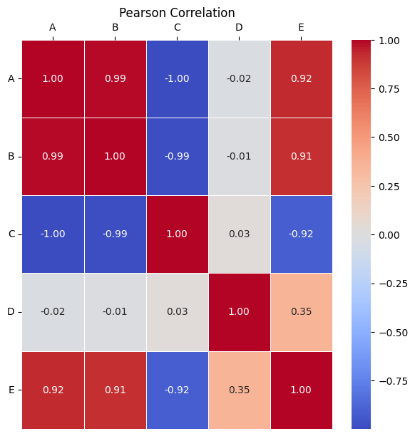
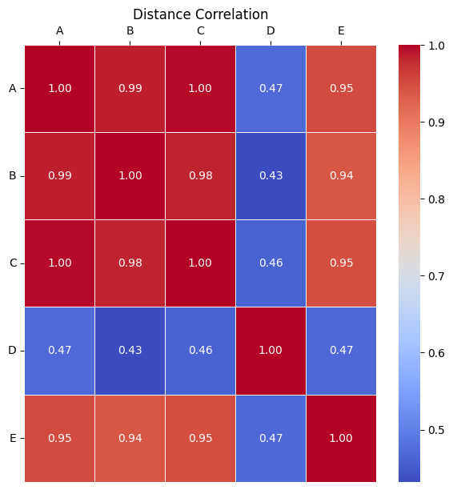

Correlation Coefficients - Code Examples#
import pandas as pd
import numpy as np
import seaborn as sns
import matplotlib.pyplot as plt
from statsmodels.stats.dist_dependence_measures import distance_correlation
# Generate the DataFrame with specified patterns
np.random.seed(42)
data_size = 200
df = pd.DataFrame()
df['A'] = np.random.rand(data_size) * 10
df['B'] = 2 * df['A'] + np.random.randn(data_size)
df['C'] = -5 * df['A'] + np.random.randn(data_size)
df['D'] = (df['A'] - 5)**2 + np.random.randn(data_size)
df['E'] = 0.1 * df['A']**3 + np.random.randn(data_size)
# Select numerical columns (if your DataFrame has mixed types)
df_numeric = df.select_dtypes(include=[np.number])
# Pearson Correlation
pearson_corr = df_numeric.corr(method='pearson')
# Spearman's Rank Correlation
spearman_corr = df_numeric.corr(method='spearman')
# Kendall's Rank Correlation
kendall_corr = df_numeric.corr(method='kendall')
# Distance Correlation
dist_corr_matrix = np.zeros((df_numeric.shape[1], df_numeric.shape[1]))
for i, col1 in enumerate(df_numeric.columns):
for j, col2 in enumerate(df_numeric.columns):
dist_corr_matrix[i, j] = distance_correlation(df_numeric[col1], df_numeric[col2])
dist_corr_df = pd.DataFrame(dist_corr_matrix, index=df_numeric.columns, columns=df_numeric.columns)
print("Pearson Correlation Matrix:")
print(pearson_corr)
print("\n" + "="*50 + "\n")
Pearson Correlation Matrix:
A B C D E
A 1.000000 0.986675 -0.997664 -0.024693 0.922479
B 0.986675 1.000000 -0.985073 -0.014928 0.912906
C -0.997664 -0.985073 1.000000 0.030479 -0.918314
D -0.024693 -0.014928 0.030479 1.000000 0.353390
E 0.922479 0.912906 -0.918314 0.353390 1.000000
==================================================
print("Spearman's Rank Correlation Matrix:")
print(spearman_corr)
print("\n" + "="*50 + "\n")
Spearman's Rank Correlation Matrix:
A B C D E
A 1.000000 0.984919 -0.997012 -0.056583 0.981656
B 0.984919 1.000000 -0.982784 -0.048907 0.968036
C -0.997012 -0.982784 1.000000 0.056628 -0.978924
D -0.056583 -0.048907 0.056628 1.000000 -0.022364
E 0.981656 0.968036 -0.978924 -0.022364 1.000000
==================================================
print("Kendall's Rank Correlation Matrix:")
print(kendall_corr)
print("\n" + "="*50 + "\n")
Kendall's Rank Correlation Matrix:
A B C D E
A 1.000000 0.896784 -0.955377 -0.063317 0.914271
B 0.896784 1.000000 -0.890754 -0.048945 0.857286
C -0.955377 -0.890754 1.000000 0.061709 -0.894975
D -0.063317 -0.048945 0.061709 1.000000 -0.000503
E 0.914271 0.857286 -0.894975 -0.000503 1.000000
==================================================
print("Distance Correlation Matrix:")
print(dist_corr_df)
print("\n" + "="*50 + "\n")
Distance Correlation Matrix:
A B C D E
A 1.000000 0.985252 0.997201 0.469898 0.950991
B 0.985252 1.000000 0.983587 0.431903 0.939284
C 0.997201 0.983587 1.000000 0.461824 0.946920
D 0.469898 0.431903 0.461824 1.000000 0.468610
E 0.950991 0.939284 0.946920 0.468610 1.000000
==================================================
plt.figure(figsize=(6, 6))
heatmap = sns.heatmap(pearson_corr, annot=True, cmap='coolwarm', fmt=".2f", linewidths=0.5)
# Adjusting the x-axis labels to be displayed on the top
heatmap.xaxis.tick_top()
heatmap.xaxis.set_label_position('top')
# plt.xticks(rotation=90)
plt.yticks(rotation=0)
plt.tight_layout()
plt.title("Pearson Correlation")
plt.show()

plt.figure(figsize=(6, 6))
heatmap = sns.heatmap(spearman_corr, annot=True, cmap='coolwarm', fmt=".2f", linewidths=0.5)
# Adjusting the x-axis labels to be displayed on the top
heatmap.xaxis.tick_top()
heatmap.xaxis.set_label_position('top')
# plt.xticks(rotation=90)
plt.yticks(rotation=0)
plt.tight_layout()
plt.title("Spearman's Rank Correlation")
plt.show()

plt.figure(figsize=(6, 6))
heatmap = sns.heatmap(kendall_corr, annot=True, cmap='coolwarm', fmt=".2f", linewidths=0.5)
# Adjusting the x-axis labels to be displayed on the top
heatmap.xaxis.tick_top()
heatmap.xaxis.set_label_position('top')
# plt.xticks(rotation=90)
plt.yticks(rotation=0)
plt.tight_layout()
plt.title("Kendall's Rank Correlation")
plt.show()

plt.figure(figsize=(6, 6))
heatmap = sns.heatmap(dist_corr_df, annot=True, cmap='coolwarm', fmt=".2f", linewidths=0.5)
# Adjusting the x-axis labels to be displayed on the top
heatmap.xaxis.tick_top()
heatmap.xaxis.set_label_position('top')
# plt.xticks(rotation=90)
plt.yticks(rotation=0)
plt.tight_layout()
plt.title("Distance Correlation")
plt.show()
